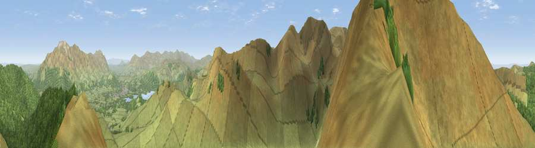

Viewpoint near Braithwaite
#5315 in England · top 40% of its area beats it · near Braithwaite · open accessWhere it is
The exact computed spot (NY 20625 22775). Click the marker for map links.
Public access: this spot lies on mapped open-access land (CRoW Act 2000) — you may roam here on foot. Computed from Natural England's CRoW access layer and OpenStreetMap rights of way — not the legal definitive map. Always verify locally.
The view, rendered

A 360° render of this exact spot computed from the terrain model, tree cover and land cover — summer colours, afternoon light, calibrated against photographs of famous viewpoints. Real trees, hedges and buildings will differ in detail.
The panorama
Grey silhouette: terrain skyline in each direction (720 bearings, Earth curvature and refraction included). Dashed green: skyline with trees (+15 m) and buildings (+8 m) as obstacles. Blue strip: how far the ground is visible on each bearing.
Where the view opens
Wedge length = distance to the farthest visible ground on that bearing (vegetation-aware). Rings at 10, 25 and 50 km.
What fills the view
89% grassland · 11% woodland
Angular shares of the visible panorama (visual magnitude), not map area. Landscape diversity 0.16 (0–1 Shannon).
Key numbers
More beautiful places nearby
The staircase of upgrades: each row has a higher view potential than everything closer. Driving times are estimates from straight-line distance, calibrated against real road routing — check an actual route before setting out.
| Place | Direction | Drive | Score |
|---|---|---|---|
| Grisedale Pike | W · 1 km | ~2 min | 83.7 |
| Whiteside | WSW · 4 km | ~9 min | 85.4 |
| Viewpoint near Loweswater | SW · 4 km | ~10 min | 86.6 |
| Long Side | NE · 7 km | ~14 min | 89.5 |
| Viewpoint near Finsthwaite | SSE · 39 km | ~58 min | 90.3 |
| The Knoll | S · 436 km | ~410 min | 91.0 |
54.59390, -3.22998 · source: screening · position refined by local search. Computed location — check access rights before visiting.